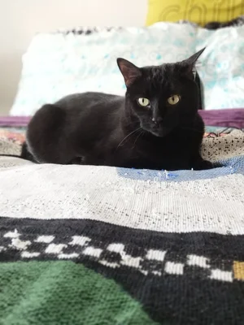
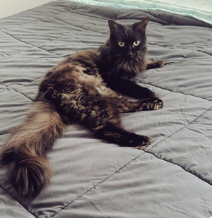
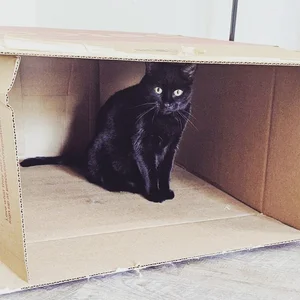
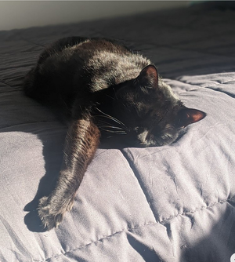

"When Porn Doesn’t Speak: Understanding AI-Assisted Sex Work"
• February 10-11, 2026 - Social AI: A Philosophy Workship, Exeter University
• March 9, 2026 - PAINT talk series (online)

"Behavioral Authenticity in an Era of Platform Decay"
• March 26-27, 2026 - Free Speech and Democratic Disagreement, UIT: Artic University of Tromsø
"Responsibility for Recommendations"
• January 24-25, 2025 - Social Media and Communication workshop, Barnard College
• April 12-14, 2025 - First International Conference on the Philosophy of Content Moderation (PhilMod)
• September 30, 2024 - Centre for Ethics, University of Toronto
• August 6, 2024 - Macquarie University

"Working for the Machine"
• November 14, 2025 - PPE Society's 9th Annual Meeting, New Orleans
"Mapping the Ethical Landscape of AI-Assisted Sex Work" (with Mercy Corredor)
• June 1-4, 2025 - Canadian Philosophical Association Annual Meeting, Toronto
• August 4-6, 2025 - Midwest Early-Career Social Philosophy of Technology Workshop (MECSPoT2025), Notre Dame

"Interrogating Collective Authenticity as a Norm for Online Speech" (with Megan Hyska)
• March 29-30, 2024 - Penn-Georgetown Digital Ethics Workshop